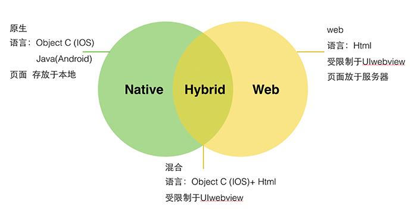
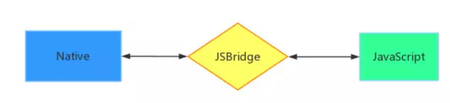
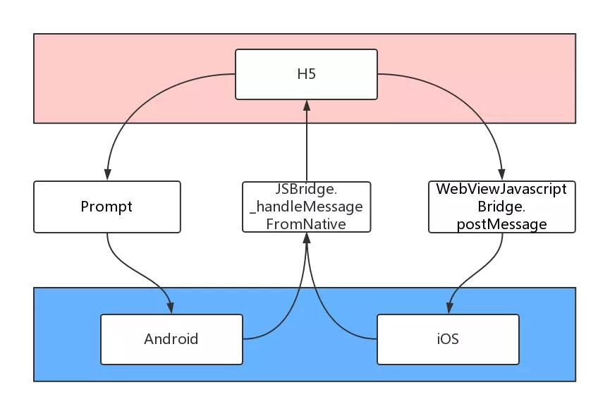
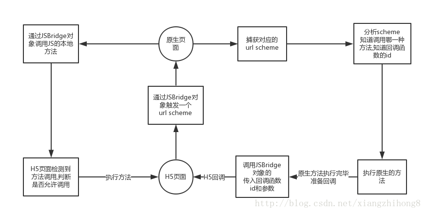
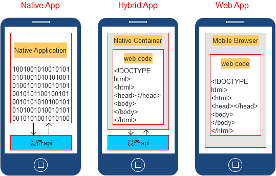
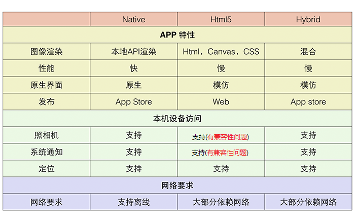

# Hybrid 相关知识
# 前言
随着现在移动互联网的快速发展，市面上目前主流移动应用程序主要分三类：Web App、 Native App 和 Hybrid App。
三者大致关系如下：

# 内容
# 一、Web App
Wab App，即移动端网站，一般指的是基于 Web 的应用，基于浏览器运行，无需下载安装，基本上可以说是触屏版本的网页应用。这类应用基本上是一个网页或一系列网页，旨在在移动屏幕上工作。
# 1.1 Web 网站
一般分为两种：
- MPA(Multi-page Application)
- SPA(Single-page Application)
一般的Web App是指SPA形式开发的网站。
# 1.2 优点及缺点
优点
- 开发和维护成本低，可以跨平台，调试方便；
前端人员开发的代码，可应用于各大主流浏览器(特殊情况可以代码进行下兼容)，没有新的学习成本，而且可以直接在浏览器中调试。
- 更新最为快速；
由于 web app 资源是直接部署在服务器端的，所以只需替换服务器端文件，用户访问是就已经更新了(当然需要解决一些缓存问题)。
- 无需安装 App，不会占用手机内存；
通过浏览器即可访问，无需安装，用户使用成本更低。
缺点
- 性能低，用户体验差；
由于是直接通过的浏览器访问，所以无法使用原生的 API，操作体验不好。
- 依赖于网络，页面访问速度慢，耗费流量；
Web App 每次访问都必须依赖网络，从服务端加载资源，当网速慢时访问速度很不理想，特别是在移动端，对网站性能优化要求比较高。
- 功能受限，大量功能无法实现；
只能使用 HTML5 的一些特殊 API ，无法调用原生 API ，所以很多功能存在无法实现情况。
- 临时性入口，用户留存率低；
这既是它的优点，也是缺点，优点是无需安装，确定是用完后有时候很难再找到，或者说很难专门为某个 web app 留存一个入口，导致用户很难再次使用。
# 二、Native App
Native APP指的是原生程序，需要用户下载安装使用，一般依托于操作系统，有很强的交互，是一个完整的 App，可拓展性强，能发布应用商店。
目前市面上主流的平台有：Android和IOS。
# 2.1 优点
- 直接依托于操作系统，用户体验好，操作流畅、性能稳定；
- 用户留在率高；
- 功能最为强大，特别是在与系统交互中，几乎所有功能都能实现；
由于Native APP是直接依托于系统，所以可以直接调用官方提供的 API，功能最为全面(比如本地资源操作，通知，动画等)。
# 2.2 缺点
- 开发和维护成本高，无法跨平台，需要各平台各自独立开发；
Android上基于Java开发，IOS上基于OC或Swift开发，相互之间独立，必须要有各自的开发人员。
- 门槛较高，原生人员有一定的入门门槛，人才较少；
原生的一个很大特点就是独立，所以不太容易入门，而且Android， iOS都需要独立学习。
- 分发成本高，更新缓慢，特别是发布应用商店后，需要等到审核周期；
原生应用更新是一个很大的问题， Android 中还能直接下载整包 APK 进行更新，但是 iOS 中，如果是发布 AppStore ，必须通过 AppStore 地址更新，而每次更新都需要审核，所以无法达到及时更新。
# 三、Hybrid App
Hybrid App指的是混合开发，也就是半原生半 Web 的开发模式，有跨平台效果，当然了，实质最终发布的仍然是独立的原生 APP（各种的平台有各种的 SDK）。
# 3.1 优点
- 学习和开发成本较低，可以跨平台，调试方便；
Hybrid 开发模式下，由原生提供统一的 API 给 JS 调用，实际的主要逻辑由 HTML 和 JS 完成，最终放在 webview 中显示，这样只需要写一套代码即可，达到跨平台效果，另外也可以直接在浏览器中调试，很方便。
一般 Hybird 中的跨平台最少可以跨三个平台：Android App ，iOS App ，普通 webkit 浏览器。
需要前端人员关注一些原生提供的 API，具体的实现无需关心，没有新的学习内容。
- 维护成本低，功能可复用，并且更容易更新；
虽然没有 web app 更新那么快速，但是 Hybird 中也可以通过原生提供 api，进行资源主动下载，达到只更新资源文件，不更新 apk 的效果。
- 功能更加完善，性能和体验要比起 web app 好太多；
因为可以调用原生 api，所以很多功能只要原生提供出就可以实现，另外性能也比较接近原生。
- 部分性能要求的页面可用原生实现；
这种模式是原生混合 web ，所以我们完全可以将交互强，性能要求高的页面用原生写，然后一些其它页面用 JS 写，嵌入 webview 中，达到最佳体验。
# 3.2 缺点
- 部分性能要求的页面可用原生实现；
这种模式受限于 webview 的性能，相比原生而言有不少损耗，体验无法和原生相比。
- 不适用于交互性较强的 app；
这种模式的主要适用：一些新闻阅读类，信息展示类的 app ，不适用于一些交互较强或者性能要求较高的 app (比如动画较多就不适合)。
# 3.3 Web 调用 Native 协议调用
在 HTML5 中调用 Native 程序一般有两种较通用的方法。
- 通过 URI 请求
- 通过 addJavaScriptInterface 注入方法到页面中调用
# 3.4 Native 调用 Web 协议调用
这种实现交互的核心方法其实都可以认为是通过方法注入来实现的，Native 应用将协议注入到系统 Scheme，或将 Native 方法直接注入到页面的全局亦是反之也可以在 HTML5 页面全局作用域中添加方法，让 Native App 调用。这样就完成了与 Native App 的相互调用。
# 3.5 JsBridge 协议
jsBridge 简单来讲，主要是**给 JavaScript 提供调用 Native 功能的接口，**让混合开发中的前端部分可以方便地使用地址位置、摄像头甚至支付等 Native 功能。
JSBridge 就像其名称中的 “Bridge” 的意义一样，是 Native 和非 Native 之间的桥梁，它的核心是构建 Native 和非 Native 间消息通信的通道，而且是 双向通信的通道。
JSBridge 另一个叫法及大家熟知的 Hybrid app 技术。

所谓双向通信的通道：
- JS 向 Native 发送消息
调用相关功能、通知 Native 当前 JS 的相关状态等。
- Native 向 JS 发送消息
回溯调用结果、消息推送、通知 JS 当前 Native 的状态等。
JS Bridge 实现原理
Android 和 iOS 的 JSBridge 实现方式：

基本流程

- H5 页面通过某种方式触发一个
url scheme; - Native 捕获到
url scheme，并进行分析和处理; - Native 调用 H5 的 JSBridge 对象传递回调;
原生的 WebView/UIWebView 控件已经能够和 JS 实现数据通信了，那为什么还要 JSBridge 呢？
其实使用 JSBridge 有很多方面的考虑：
- Android4.2 以下，
addJavascriptInterface` 方式有安全漏掉。 - iOS7 以下，JS 无法调用 Native。
url scheme交互方式是一套现有的成熟方案，可以完美兼容各种版本，对以前老版本技术的兼容。
# 四、Hybrid App 与 Native App 及 Web App 之间的区别
# 4.1 三者使用场景对比

# 4.2 三者技术特征对比

# 4.3 ReactNative 一起放入作对比
| NativeApp | WebApp | HybridApp | ReactNativeApp |
|---|---|---|---|
| 原生功能体验 | 优秀 | 差 | 良好 |
| 渲染性能 | 非常快 | 慢 | 接近快 |
| 是否支持设备底层访问 | 支持 | 不支持 | 支持 |
| 网络要求 | 支持离线 | 依赖网络 | 支持离线(资源存本地情况) |
| 更新复杂度 | 高(几乎总是通过应用商店更新) | 低(服务器端直接更新) | 较低(可以进行资源源包更新) |
| 编程语言 | Android(Java),IOS(OC/Swift) | js+html+css3 | js+html+css3 |
| 社区资源 | 丰富(Android，iOS 单独学习) | 丰富(大量前端资源) | 有局限(不同的 Hybrid 相互独立) |
| 开发难度 | 难(不同平台需要单独学习) | 简单(写一次，支持不同平台访问) | 简单(写一次，运行任何平台) |
| 开发周期 | 长 | 短 | 较短 |
| 开发成本 | 昂贵 | 便宜 | 较为便宜 |
| 跨平台 | 不跨平台 | 所有 H5 浏览器 | Android，iOS，h5 浏览器 |
| APP 发布 | AppStore | Web 服务器 | AppStore |
# 五、三者如何选择
- 选择纯 Native App 模式的情况
性能要求极高，体验要求极好，不追求开发效率。
- 选择 Hybrid App 模式的情况
大部分情况下的 App 都推荐采用这种模式，这种模式可以用原生来实现要求高的界面，对于一些比较能用型，展示型的页面完全可以用 web 来实现，达到跨平台效果，提升效率。一般好一点的 Hybrid 方案，都把资源放在本地的，可以减少网络流量消耗。
- 选择 React Native App 模式的情况
追求性能，体验，同时追求开发效率，而且有一定的技术资本，值得前期投入。
React Native 这种模式学习成本较高，所以需要前期投入不少时间才达到较好水平，但是有了一定水准后，开发起来它的优势就体现出来了，性能不逊色原生，而且开发速度也很快
# 参考资料
- 什么是 Hybrid App，与 Native App 及 Web App 有什么区别
- Hybrid App 离线包方案实践
- 得到 Hybrid 架构的演进之路
- 5000 字解析：前端五种跨平台技术
- 《现代 web 前端》
# 联系作者
平凡世界，贵在坚持。

← Hook 学习 Flutter 学习 →